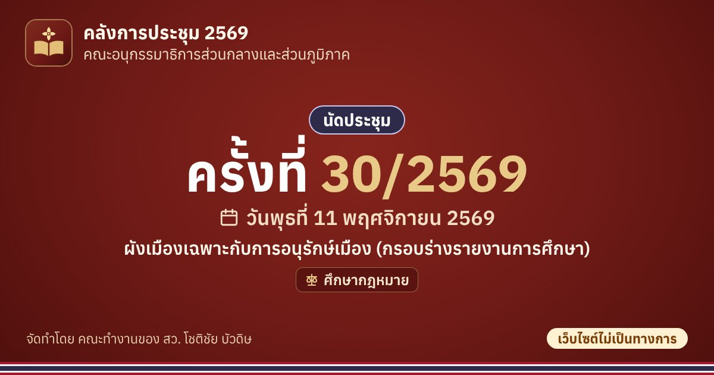

ครั้งที่ 30/2569 (11 พ.ย. 2569) · คณะอนุกรรมาธิการส่วนกลางและส่วนภูมิภาค
ผังเมืองเฉพาะกับการอนุรักษ์เมือง (กรอบร่างรายงานการศึกษา)
📅 วันพุธที่ 11 พฤศจิกายน 2569
บันทึกวันประชุมไว้ในปฏิทินของท่าน
เพิ่มลง Google ปฏิทิน เพิ่มลงปฏิทินในโทรศัพท์ (iPhone, iPad และปฏิทินอื่น ๆ)ใส่ปฏิทินเพื่อติดตามเท่านั้น ไม่ใช่คำเชิญเข้าร่วม กำหนดการอาจเปลี่ยนแปลง โปรดตรวจสอบกับหนังสือนัดประชุมฉบับล่าสุด หากกดใน LINE แล้วปฏิทินไม่เปิด ให้กดเมนู ⋯ แล้วเลือกเปิดในเบราว์เซอร์ (Safari หรือ Chrome)